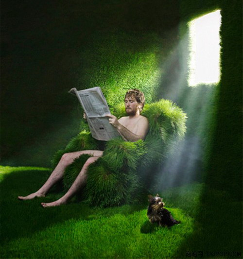

平淡的生活
是每天下午打完球回来后饮下的一杯淡盐水
是每晚在床头随便翻阅的两章《论语》
是简简单单的一日三餐和夏虫声里闷热浅短的睡眠
平淡的生活
与外界既隔绝又关联
房门始终开着，心扉也一直敞开
但很少再去敲击键盘
只是每天整理一下书桌，扫扫室内的尘埃
洗完了衣服等待着阳光的炙干
平淡的生活
告别了往日的烦躁不安
也不再为伤痛而痛苦呐喊
更不会把无休止的伤感涂满今天的夜晚
我只等着在风过的时候
抬起头望望远处流动的云天
偶尔也旋开广播
听听窗外的故事
不关心战争、外交、财富与贫穷
也不关心台风的风力，以及防汛抗旱
只想让那轻柔的音乐
伴我偶然一次的无眠
早已决定把心事托给流水了
把微笑留给明天
而昨日的回忆
则希翼着用一点点酒精与朋友的笑声
来慢慢地冲淡
日子就是这样
缓慢而又平淡
平淡就好
平淡不苦
也不甜